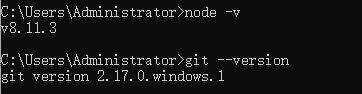

只是有了搭建一个属于自己网站的冲动，对服务器、域名基本没什么了解，刚开始的时候其实是处于一种懵逼状态的。那么最开始我是从哪里入手的呢？
Hexo。在明白自己想要建一个什么样的网站之后，去寻找我想要一个什么要的博客网站，它是怎么做的。这里贴上我同事的个人博客网站http://www.zhanglongdream.com/
一、本地安装Hexo，及其学习使用
Hexo上手起来还是非常简单的，首先确保自己的电脑中Node环境和git均已安装。网上的教程很多，这里就不再赘述。命令行查看自身node及git版本：
$ node -v
$ git --version
运行结果为表示node、git均已成功安装。接下来npm运行以下命令安装Hexo
$ npm install -g hexo-cli
接下来根据文档逐步执行Hexo项目初始化命令
$ hexo init my-blog // 此处的'my-blog'即为自己的Hexo文件名
$ cd my-blog
$ npm install
打开my-blog，可以看到目录列表：
.
├── _config.yml // 整个项目的配置文件，包括页面的标题、作者、语言等等
├── package.json // 依赖包配置文件
├── scaffolds // Hexo的模块文件夹，在命令行新建文章的时候会根据此文件的模板进行文章内容填充，可以与html中的模板引擎类比理解
├── source // 资源文件夹。文章中需要引用的静态图片之类的文件可以放在这个文件夹下，包括Hexo编译前的markdown文件，也在这个目录下
| ├── _drafts
| └── _posts
└── themes // 主题文件，Hexo初始化的主题并不为next，即本网站所使用的主题。需后续在此目录下修改
然后我在了解了一些_config.yml及Hexo的基本命令之后就直接开始了写作
$ hexo new post hello-world
命令行运行之后在source - _posts文件夹下就会多出来一个hello-world.md，这个文件就是我们的文章文件了。我们对它进行修改，然后运行
$ hexo g
这个命令其实是hexo generate的缩写，功能是生成静态文件。
我们可以看到项目中多出来一个public文件夹，即为Hexo帮我们编译之后生成的静态页面文件夹。